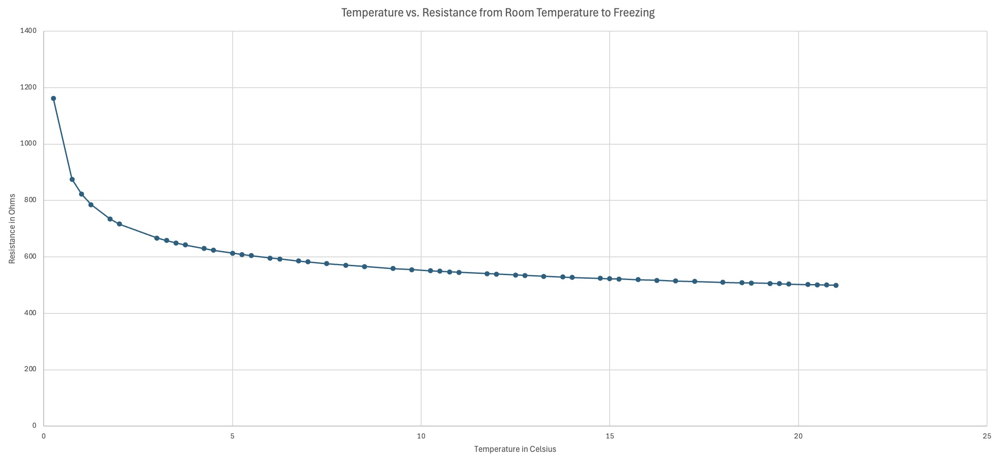
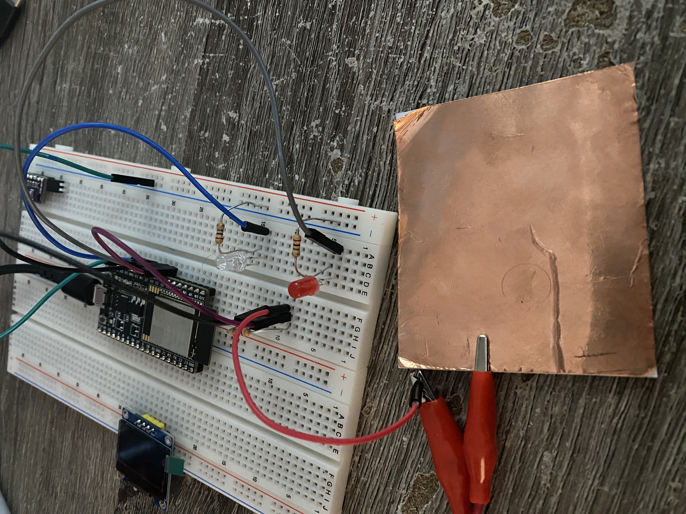
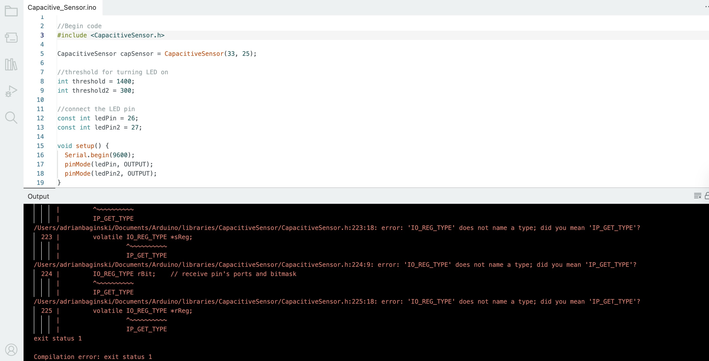
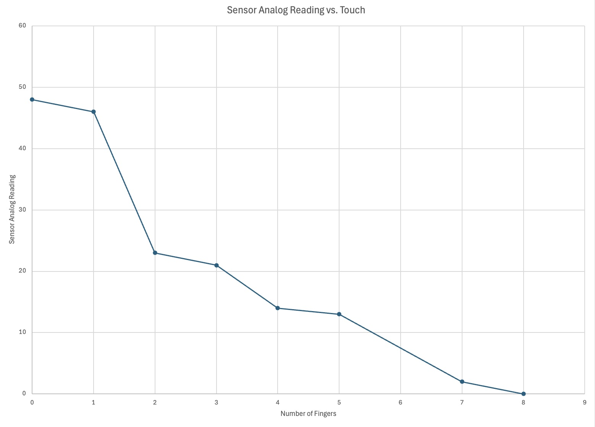

<div class="textcontainer">
<p class="margin"> </p>
<h3>Week 3.2: Electronic Inputs</h3>
<h4>Assignment 1: Temperature Sensor</h4>
For this assignment, I decided to expand upon my previous temperature sensor by incorporating a thermistor instead of the bmp280. The thermistor is able to read the temperature in real-time, providing more accurate data than the bmp280. Furthermore, I connected the thermistor to the OLED display in order to readily monitor and variations in the temperature. Afterwards, I took a measurement from room temperature to freezing and utilized the serial monitor function from arduino to measure the discrepencies. Below is a brief demo of my setup.
<video controls>
<source src="m.mp4" type="video/mp4" size="200">
</video>
<br>
The experiment consisted of utlizing the metal bolt placed at the end of the thermistor to conduct temperatrue readings in order to plot it against a resistance reading. I was able to reference a formula from <a href="https://roberthart56.github.io/SCFAB/SC_lab/Sensors/Thermistor/thermistor_read.txt"> Robert Hart</a> and frankly I'm not sure if I inputed it correctly. However, it superficially appears to have worked. In order to control to min and max values, it depends on the setting by which the sensor is being read. For my particular setting, I was able to control the min value by placing the sensor in the freezer, understood that the temperature is below 0C, and knew that the sensor could not read into the negatives. On the other hand, to control the max values, I left the sensor out in room temperature and read the data after several minutes once the temperature was hovering ~21C. Therefore, my min value was 0C and my max value was ~21C. The range between the max value was +/- 3 and the range between the min value was +/- 0.25. In order to control this range, I could have turned off my air conditioning unit or ensured that the sensor was not near a part of the room that had a breeze. In other words, a more stable climate without a draft. On the other hand, to control the range of the min value, I found the range to be considered negligable since the freezer has a constant cooling component in use. Furthermore, I closed the door of the freezer and made sure that the sensor rod was not touching any of the borders of the freezer.
<br>
<br>
The graph below shows the results of my experiment, which plots the relationship between temperature and resistance. In addition, the x-axis is the temperature in celsius and the y-axis is the calculated resistance using 10K Ohms. As the chart shows, the inverse relationship is logarithmic whereby resistance increases as temperature decreases.
<p class="margin"> </p>
<div class="center-colum">

<br>
Here is the code that I used to integrate the thermistor sensor with the OLED display, along with deriving the resistance.
<pre><code class="language-arduino">
#include "max6675.h"
#include Adafruit_GFX.h
#include Adafruit_SSD1306.h
#include Adafruit_Sensor.h
#define SCREEN_WIDTH 128
#define SCREEN_HEIGHT 64
#define OLED_RESET -1
Adafruit_SSD1306 display(OLED_RESET);
//Temperature Sensor and Resistance Calculation
int so = 17;
int cs = 18;
int sck = 19;
float temp = 0;
float R1 = 10000;
float R2, T;
float A = 3.354e-3;
float B = 2.5698e-4;
MAX6675 thermocouple (sck, cs, so);
void setup() {
Serial.begin(9600);
display.begin(SSD1306_SWITCHCAPVCC, 0x3c);
delay(2000);
display.clearDisplay();
display.setTextColor(WHITE);
}
void loop() {
temp = thermocouple.readCelsius();
R2 = R1 * 1/(4096.0 / (float)temp - 1.0);
T = (1.0 / (A + B*log(R2/R1)));
delay(100);
Serial.println(temp);
Serial.println(T);
//clear display
display.clearDisplay();
//Header text size
display.setTextSize(2);
display.setTextColor(SSD1306_WHITE);
display.setCursor(10, 0);
display.println("Adrian B.");
//Temp text size
display.setTextSize(1);
display.setCursor(5, 20);
display.print("Temperature: ");
display.print(temp);
display.println(" C");
display.display();
delay(2000);
}
</code></pre>
<br>
<h4>Assignment 2: Capactive Sensor</h4>
I have been encountering several issues when trying to code a touch sensor using the copper tape. Although the circuitry is relatively simple, as shown below, I cannot seem to overcome an exit status 1 error in Arduino and suspect the issues lies within the library itself. The original experiment consisted of utilized the copper tape and LED's to serve as a touch sensor, with the LED's lighting up to a respective threshold of force being pressed down on the copper tape. In other words, the green LED would merely light up when a single finger (or low force) was placed on the copper tape. Whereas if I placed the palm of my hand on the copper tape, then the green and red LED would both light up.
<p class="margin"> </p>
<div class="center-colum">

<br>
When trying to utilize the CapacitiveSensor library in Arduino, I keep on receiving a exit status 1 error that states that IO_REG_TYPE does not name a type. However, when I looked into the code of the library, IO_REG_TYPE is clearly defined and implement throughout the library code. I even uninstalled and reinstalled a previous version to see if the error is simply within the updated version. Unfortunately, even when reconfiguring the library code myself, I'm still encountering issues with CapacitiveSensor.h.
<p class="margin"> </p>
<div class="center-colum">

<br>
Here is the code that I used in order to calibrate the breadboard to the copper tape and led lights to create the touch sensor.
<pre><code class="language-arduino">
//Begin code
#include CapacitiveSensor.h
CapacitiveSensor capSensor = CapacitiveSensor(33, 25);
//threshold for turning LED on
int threshold = 1400;
int threshold2 = 300;
//connect the LED pin
const int ledPin = 26;
const int ledPin2 = 27;
void setup() {
Serial.begin(9600);
pinMode(ledPin, OUTPUT);
pinMode(ledPin2, OUTPUT);
}
void loop() {
// read and store the value
long sensorValue = capSensor.capacitiveSensor(30);
Serial.println(sensorValue);
//value > threshold, then turn LED on
if (sensorValue > threshold){
digitalWrite(ledPin, HIGH);
}
//value < threshold
else{
digitalWrite(ledPin, LOW);
}
//value > threshold2, then turn LED on
if (sensorValue > threshold2){
digitalWrite(ledPin2, HIGH);
}
else {
digitalWrite(ledPin2, LOW);
}
delay(10);
}
</code></pre>
After seeking help, I came to the understanding that the CapacitiveSensor library doesn't support my ESP32. Therefore, I made some adjustments whereby I changed the cirucuitry to analog to function for transmit-receive capabilities. As a result, I was able to conduct the experiment—albeit it with limited data points because I used my fingers to manipulate the area of the copper wire. Nonetheless, after referencing the tx_rx code on the PHYS-S12 website, I was able to create a chart showcasing the relationship between the analog readings and the number of fingers that were placed on the copper tape.
<br>
<br>
To find a common baseline, or the max amount, I left the copper wire untouched for several seconds to establish a baseline—which fluctuated between 47-48. Thereafter, I gradually began placing a piece of copper tape on top of my fingers and gradually placing it next to one another on the tableside tape until I was able to cover the entire surface area—which produced my min value of zero. The signal transmission occured when I touched the tableside piece of copper tape. Lastly, the range between the min and max values for the tableside copper tape were +/- 1. In order to control the range, I could ensure that the surface area is not being tainted from the tape peeling off by sticking it on a wooden block and measuring the length and width of the tape.
<br>
<br>
To produce more datapoints moving forward, I would utilize a larger piece of tableside copper tape to create more surface area and produce a consistent touch measure (aside from my fingers) to monitor an exact area that the copper tape is comprised of. The chart below shows a relationship between the number of fingers (area) vs. the analog sensor reading, which indicates that as the area of the copper tape decreases (more fingers placed on top) so does the analog sensor quantity—and vice versa.
<p class="margin"> </p>
<div class="center-colum">

</div>